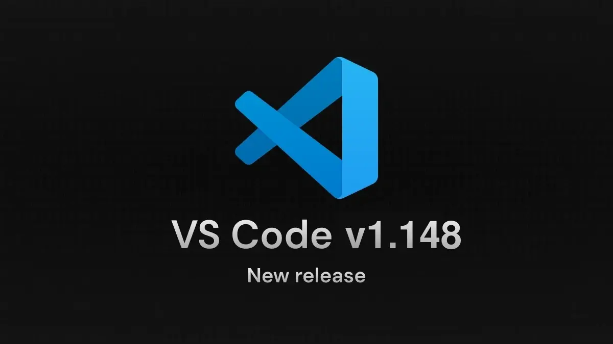
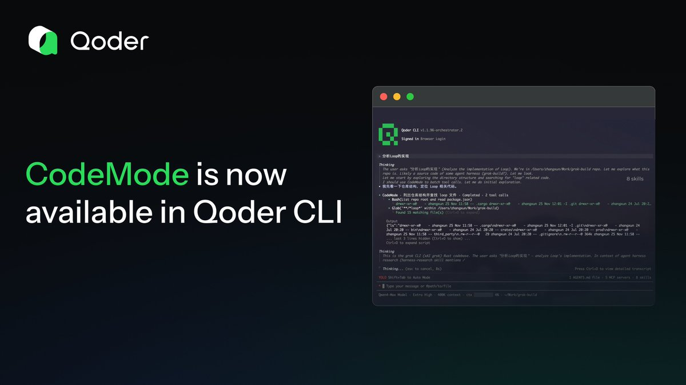

AI Intelligence Daily · 2026-11-26（周四）
统计窗口：主窗 2026-11-25 08:00 → 2026-11-26 08:00（上海 / Asia/Shanghai）。吸收 11-25 快讯 21:05 PUSH（Kimi Code Desktop 1.5.0 转正 + CLI 2.8.0、CodeBuddy Code 2.187.0），以及 08:56 至 23:03 各档 SILENT near-miss；并补扫约 15:03Z 至 00:00Z 的隔夜官方 X 与官网。事实与判断分区 · 国内/国际双轨。· 已在售 Desktop/CLI：本窗能力向变化是 Kimi Code Desktop 1.5.0 由 canary 转入稳定通道并配对 CLI 2.8.0（21:05 已推送），以及 CodeBuddy Code 2.187.0（本地会话分支 / Agent Home 常驻 / 企微闭环；官方未写 WorkBuddy Desktop 安装包同步升级）。另有 Qoder CLI 官方账号宣布 CodeMode（脚本化多步工具工作流；changelog 显示 CodeMode 相关改动在 1.1.96 / 1.1.97 已出现，1.1.98 为 hooks 与稳定性），VS Code 1.148.0（Keep agents going Preview、Sandbox profiles / Dev Containers Experimental、AHP 1.1.0），以及 Factory 同日点版本 1.20.0 / 1.21.0。点版本与转正：Claude Code latest 2.1.332（把已报的 Skills over MCP 落到 latest）· Copilot CLI latest 1.0.116（17:02:41Z 转正；prerelease 已到 1.0.117-1，不以预发写成已发船）· Antigravity CLI 1.5.17（MCP OAuth 刷新令牌，以及企业工作区外文件访问保护修复）· 讯飞 WinWork V1.1.30（问题修复；Daily 11-25 漏收，本报补记）。持平或仅旁支：Codex latest 仍 0.172.0（alpha 已到 0.174.0-alpha.6，不以预发写成已发船）· Gemini CLI 仍 0.71.1 · MiniMax Desktop 仍 3.1.19 / CLI 仍 0.7.9 · Qwen Code / Desktop 仍 0.28.4（GH 另有 v1.0.0-preview.2，不以预发写成已发船）· 千问办公仍 2.1.0 · Qoder Desktop changelog 仍 0.5.18 · 小艺 Work 仍 0.7.8 · OpenCode 稳定顶仍 2.4.1 · agent-desktop 仍 1.3.1 · MCP servers 仍 v2.5.0 · dsh latest 仍 0.2.2-rc.5 · ZCode 仍 4.0.0 线 · Devin Desktop changelog 顶仍 v3.14.30833 / November 20 · Cursor changelog 仍顶 Nov 6 Voice Chat · StepCode 仍 0.1.8。Claude 状态页：Microsoft 365 加载项事故仍未恢复，本窗 20:21:12Z 由 investigating 改为 identified（上游提供商，影响使用个人微软账号在 Mac 上登录 Office 的用户）。OpenAI 状态页：ChatGPT / Work / Codex Cloud 会话错误升高已于 16:12:21Z resolved；Codex 的 GitHub 审查与合并故障（归因 GitHub 服务中断）16:58:51Z 转入 monitoring。★（约 08:18 CST，对比 Daily 11-25 约 08:15 CST，约 24 小时）：deepseek-harness 287,062（+513）· opencode 229,194（+217）· chrome-devtools-mcp 59,352（+142）· Hy-MT3 73（+27）· servers 92,252（+27）· kimi-code 8,293（+5）。agent-browser 本轮按昨日仓库名探测返回 404，不编造读数。
今日一句话判断
今天真正往前推的，是企业把 Agent 接入办公数据的门口标准化了，而工作端则把「谁付钱、怎么批准、会话能不能分叉或常驻」写成了可安装的产品。 Google 补齐了 Workspace MCP 服务器和官方 CLI 的正式可用说明，并给出人机确认、审计和 2027 年的强制路径；这是 Daily 11-25 因官方 RSS 不可用而漏收的条目，今天补上。国内一侧，Kimi 把多日停留在 canary 的 Desktop 1.5.0 转成稳定版，CodeBuddy 把本地会话分支、可常驻的 Agent Home 和企微闭环写进 2.187.0。隔夜 Factory 对个人开发者打开 免费 BYOI 通道。不要把 Qoder 官方账号的 CodeMode 官宣，写成今天才第一次出现在 changelog 里；也不要把 Google Research 挂出的未评审 Cogentic 论文，或 Aaronson 提到但未出示细节的密码学传闻，写成已经成立的数学事实。
专栏一｜新闻
本栏结构：
- 国际协议头条（补收）：Google Workspace MCP 服务器与官方 CLI 宣布一般可用，并给出用量档、AI Tools Addendum 与 2027 年强制走 MCP 的时间表（NEW 305；官方稿日期 11-24，Daily 11-25 因 Workspace Updates feed 持续 500 漏收）
- 国际商业中栏：Factory 对个人开发者提供 免费 BYOI 档，并限时赠送 Droid Computer 小时（NEW 306）；同日 CLI+Desktop 点到 1.20.0 / 1.21.0
- 国际工程中栏：VS Code 1.148.0 周更，加入 Keep agents going、Sandbox profiles 与为 Agent 创建 Dev Containers（NEW 307）
- 国内产品中栏：Qoder 官方账号宣布 CLI CodeMode（NEW 308；changelog 显示相关能力在 1.1.96 已出现，不以今天为首次发船日）
- 国际安全中栏：Hugging Face 推出 Enterprise Hub 付费附加组件 Nightwatch（NEW 309）
- 国际工程中栏：Anthropic 公开把 Messages API 从 Python 迁到 Rust，并用生产流量和 Agent 团队做对等校验（NEW 310）
- 短讯：Copilot CLI 1.0.116、Antigravity CLI 1.5.17、讯飞 WinWork 1.1.30 补记、Perplexity Time Machine、Muse 接入 Walmart、Gemini Live Guided Vision 登陆 iOS、1Password 后台事故、Claude / OpenAI 状态页
排序依据：重要度 → 与两条主线的相关性 → 时效。Kimi 1.5.0 与 CodeBuddy 2.187.0 已在昨日快讯推出，放入「重点事件新进展」，避免在新事件栏无增量重报。
1. Google Workspace 让 MCP 服务器和官方 CLI 一般可用，并给出人机确认、审计与 2027 年强制路径
强A · NEW · 国际 · E/F/C/I · 补收 11-24 官方稿 · watchlist **305**
发生时间：官方 Workspace Updates 文章日期 November 24, 2026，未给出到分钟的时间戳。Daily 11-25 主窗内 Workspace Updates feed 持续返回 500，当时未能入库；11-25 12:57 及后续快讯已记下交今日补收。页 Last-Modified 见到 2026-11-25T19:52:32Z（11-26 03:52:32 CST），只作页面时间，不以它改写发稿日。
发生了什么
Google 宣布，Workspace 的 MCP 服务器和官方 Workspace CLI（gwscli）对 Workspace 客户与开发者一般可用，并同时推出标准化用量档、新的 Workspace AI Tools Addendum，以及针对外部 Agent 的管理控制。
官方写明两条 Google 托管的接入方式。MCP 服务器面向云端和网页 Agent，预置工具覆盖 Gmail、Drive、Docs、Sheets、Slides、Calendar、Chat 和 Tasks（Keep 即将加入）；CLI 面向终端、虚拟机和容器沙箱中的本地 Agent，带打包技能、动态命令发现和范围受限的登录。与传统 REST 调用相比，官方强调运行时发现工具与模式、在 Workspace 边界内返回综合摘要，以及默认带有用户确认、审计日志和管理控制。
用量方面，从当天起，Workspace API（含 MCP 与 CLI）先对 Gmail、Drive、Calendar 提供两档：Standard 免费并公布配额；Scaled 面向更高配额，2027 年 4 月 1 日起对超出每日免费额度的部分计费，若不选择则可能被限到已公布配额。更关键的是一条强制要求：AI Agent 或类似访问工具必须通过 MCP 访问 Workspace 数据，而不是直接调用 REST API，技术执行从 2027 年 2 月 1 日开始。官方称目前超过 99% 的活跃开发者仍落在 Standard 档。控制面上，外部 Agent 须在 OAuth 中表明身份并经 MCP 接入，以便管理员像管理传统应用一样管理它们；管理员可要求对读取外部文件或分享数据等敏感动作做用户确认；现有用户级 DLP 自动作用于 Agent，审计日志记录 Agent 动作和用户确认。
我的判断
判断：这是本窗对「智能体互联网」权重最高的一条，尽管发稿日落在昨日日报窗内、属于补收。它不是新的模型，而是把「Agent 怎么连上办公数据、以什么身份出现、哪些动作必须经人点头、以后还能不能绕过 MCP」写成了平台规则。和昨日 Claude 的 Skills over MCP / Tasks / Elicitation、Antigravity 的 MCP Apps 放在一起看，办公套件正在从「开放一批 API」转向「只承认一条 Agent 协议入口」。Scaled 计费和 2027 年 2 月的强制执行都还没有到，不能写成今天就已经开始按次收费或切断 REST。官方「99% 开发者仍在 Standard 档」是官方统计，不是本报审计。
未来影响
短期看，做企业 Agent 的人会把 Workspace 连接从自建 REST 封装，改成官方 MCP / CLI，并准备确认点和审计字段。长期看，若强制路径按期执行，Workspace 会成为一块「不经 MCP 就进不去」的数据域；其他办公套件是否跟进，将决定 Agent 互联是一套协议，还是继续按厂商各做网关。计费档则可能改变高频后台 Agent 的成本结构。
对智能体互联网
直接相关。可对照的设计点包括：平台托管的 MCP 入口与工具发现；外部 Agent 必须在 OAuth 中可识别；敏感动作走确认而不是只靠模型「记得先问」；审计同时记下 Agent 动作和人的确认；以及用时间表而不是口号，把 REST 旁路收掉。发现和授权如果只登记工具名，以后会不够。
对 Work / Agent 引擎
直接相关。本地 Runtime 和云端 Agent 都需要把 Workspace CLI / MCP 当成一等接入，并为「等待用户确认」「管理员关闭某类动作」「配额从 Standard 被打回」准备状态，而不是把一次工具调用当成必定完成的函数。
值得进一步做什么
- 对照官方 MCP 能力说明和 CLI 文档，拆工具范围、确认策略和管理控制台开关。
- 在自有企业 Agent 里做一次「MCP 接入 + 敏感动作确认 + 审计字段」的对照实现。
- 把 2027-02-01 的 MCP 强制和 2027-04-01 的 Scaled 计费标进路线图，但不要把尚未执行的时间表写成当前限制。
真实来源
- 主来源：https://workspaceupdates.googleblog.com/2026/11/mcp-servers-cli-standardized-usage-tiers-now-available.html
- 补充：https://developers.google.com/workspace/guides/workspace-cli ；https://developers.google.com/workspace/cli/release-notes
2. Factory 对个人开发者开放免费 BYOI，并限时赠送 Droid Computer 小时
A · NEW · 国际 · I/C/B · 主窗 · watchlist **306**
发生时间：@factory 2026-11-25T17:05:48Z（11-26 01:05:48 CST）。官方定价页与个人方案文档与帖文一致。同日官方 changelog 还发出 CLI+Desktop 1.20.0（npm 约 01:40Z / 09:40 CST，Focus mode、彩色 @file、自托管 GitLab MR、MCP 会话恢复）和 1.21.0（npm 23:39:48Z / 07:39:48 CST，组织 API 密钥清单、MCP localhost 登录回调及多项修复）。
发生了什么
Factory 官方账号宣布：个人开发者在自带推理（bring your own inference）时，现在可以免费使用 Factory。作为节日限时奖励，官方还向每个账户赠送免费的 Droid Computer 小时。帖文引导用户打开官网、下载应用并添加 API 密钥后开始第一个任务。官方定价页把 Free 写成 $0 / mo per individual，并列出可用 ChatGPT、GitHub Copilot、OpenRouter 或 Vercel AI Gateway 登录，或连接自有密钥与自定义端点。Pro 仍为每人每月 20 美元并含托管推理与完整模型可用性。官方文档把 Free 与 Pro / Plus / Max 的托管推理、滚动限额区分开来。帖文没有写明赠送 Computer 小时的截止日期或具体额度，本报不编造。
同日的 1.20.0 / 1.21.0 是已在售 CLI 与 Desktop 的点版本，不是新的产品线。1.21.0 对引擎较要紧的是：组织所有者可列出组织内每一把个人 Factory API 密钥；MCP 服务器可配置 localhost 登录回调，而不必再用回环地址。
我的判断
判断：这条的分量在商业入口，而不在新协议。它降低的是「先付订阅再试工作 Agent」的门槛，把 Factory 的桌面和 CLI 更明确地做成带自有密钥的工作台。这和 OpenRouter、Vercel AI Gateway 已经出现在登录选项里是一致的：工作 Agent 厂越来越愿意把模型账单留给用户自己的提供商。不能把 Free 写成托管推理也免费，也不能把没有写明期限的 Computer 小时写成长期附赠。1.20.0 / 1.21.0 按既有口径是点版本，附记即可。
未来影响
短期看，会有更多个人开发者用自有密钥试用 Factory 的 Desktop / CLI / Computer。长期看，若 BYOI 免费档成为工作 Agent 的常见入门方式，竞争会更多落在会话、权限、远程计算机和 MCP 体验上，而不是谁先把模型包进订阅。组织侧的 API 密钥清单，则说明个人密钥进入团队后，可见性会成为治理标配。
对智能体互联网
无新的开放协议。启示是：当工作台把推理账单交给用户选择的网关时，身份、配额和审计必须能分清「这是 Factory 的会话」和「这是用户自己的模型账号」。
对 Work / Agent 引擎
直接相关。可对照免费档与托管档的能力边界、MCP 登录回调从 loopback 改到 localhost，以及组织内个人密钥的清单。若要做自有 BYOK 入口，需要先分清哪些功能仍依赖厂商托管运行时。
值得进一步做什么
- 对照官方定价页和文档，核验 Free 档实际可用的表面（Desktop / CLI / SDK / Computer）和限额。
- 关注限时 Computer 小时的截止日期与额度何时写进文档。
- 拆 1.21.0 的密钥清单与 MCP 回调，看组织治理是否足够。
配图
见图 1（@factory 官方公告配图，来源页 Factory 官方帖）。
真实来源
- 主来源：https://x.com/factory/status/2125637084522447202
- 补充：https://factory.com/pricing ；https://docs.factory.com/pricing/individuals ；https://docs.factory.com/changelog/release-notes#v1.21.0
3. VS Code 1.148.0：让忙碌中的 Agent 先不要睡，并试验沙箱配置和专用 Dev Container
A · NEW · 国际 · B/C/E · 主窗 · watchlist **307**
发生时间：GitHub 稳定版 1.148.0 published 2026-11-25T09:44:02Z（17:44:02 CST）；官方说明页日期 November 25, 2026。
发生了什么
Visual Studio Code 发布 1.148.0 稳定版。官方重点包括：Keep agents going（Preview），在受支持的主机上阻止系统在 Agent 工作时进入空闲休眠；清理远程主机上不活跃的 Agent worktree；Sandbox profiles（Experimental），用可复用配置为每个远程 Agent 主机定制沙箱规则；Create Dev Containers（Experimental），给 Agent 一个隔离的 Linux 工作区，而不必先手写容器配置。官方还写，Agent Host 对话的首个 token 平均约快 30%；Agent Host Protocol 来到 1.1.0，并包含已在 1.146 出现的 SEP-2640 Skills over MCP；Copilot harness 可在聊天中处理 sudo / ssh / git 的密码提示（chat.agentHost.copilot.shellAuthentication.enabled）。Local harness 仍标 2027 年 2 月弃用。抽出的说明中未见本周新的 CVE 顶条。
我的判断
判断：这是已在售 IDE 的周更，不是新的 Desktop 产品线，但几项预览直接碰到用户的 Work / Agent 引擎：长任务时主机不要先睡、远程 worktree 要能回收、沙箱规则要按主机复用、任务可以有自己的容器。AHP 1.1.0 继续把 Skills over MCP 做进编辑器宿主，和昨日 Claude、Antigravity 的协议面是同一方向。所有标 Preview / Experimental 的能力都不能写成默认稳定。官方「约快 30%」是官方统计，本报未复测。
未来影响
短期看，用 VS Code 跑远程 Agent 的人会先试用「别休眠」和 Dev Container 下手。长期看，编辑器正在把 Agent 宿主从「聊天侧栏」改成带生命周期、隔离和协议版本的运行时；2027 年 2 月去掉 Local harness 之后，这条线会更集中。
对智能体互联网
无新的跨厂发现协议。Skills over MCP 已在既有条目中出现，本周是宿主协议版本跟上。
对 Work / Agent 引擎
直接相关。可对照的设计点包括：长任务期间的主机休眠策略、远程 worktree 回收、按主机复用的沙箱配置、为单次任务拉起隔离容器，以及把 sudo / ssh / git 的交互式口令提示收进 harness，而不是让 Agent 在 TTY 里卡住。
值得进一步做什么
- 阅读 1.148 说明中 Preview / Experimental 的打开方式与限制，尤其是 Sandbox profiles 和 Dev Container 的权限边界。
- 对照 AHP 1.1.0 与 SEP-2640，看编辑器宿主和 Claude / 其他客户端的 Skills over MCP 是否兼容。
- 继续跟踪 Local harness 在 2027-02 前的迁移提示。
配图
见图 2（官方 1.148 发行说明页 Release highlights 配图，来源页 Visual Studio Code 1.148）。

真实来源
- 主来源：https://code.visualstudio.com/updates/v1_148
- 补充：https://github.com/microsoft/vscode/releases/tag/1.148.0
4. Qoder 官方账号宣布 CLI 可用 CodeMode；changelog 显示相关能力在 1.1.96 已出现
A · NEW · 国内 · B/E/C · 主窗 · watchlist **308**
发生时间：@qoder_ai_ide 2026-11-25T13:55:11Z（21:55:11 CST） 宣布 “CodeMode now available in Qoder CLI”。npm @qoder-ai/qodercli / @qodercn-ai/qoderclicn latest 1.1.98 分别于 11:53:14Z / 11:52:23Z（19:53 / 19:52 CST） 发布。官方 CLI changelog 在核验时已可读，顶条为 November 25 的 1.1.98；CodeMode 相关说明出现在 November 23 的 1.1.96 与 November 24 的 1.1.97。Desktop 官方 changelog 仍顶 0.5.18 / November 24，不能把本次写成 Desktop 发船。
发生了什么
Qoder 官方产品账号宣布，CLI 现已可用 CodeMode，把它写成「脚本化的多步工具工作流」，并配发官方海报。海报界面版本写 v1.1.96-orchestrator.2。官方自报大约减少 28% 的执行轮次、最多减少 29% 的输入 token，本报未做第三方复测。
官方 CLI changelog 把故事写得更具体，也更早：1.1.96（11-23）写明，当 CodeMode 开启时，常规 MCP 工具默认改经 tool search 提供；1.1.97（11-24）为 CodeMode 增加后台运行 Bash、超时自动转后台，以及用户跟进消息以结束等待、未送达结果在下一轮返回；1.1.98（11-25）则是 PreModelSwitch / PostModelSwitch hooks，以及 MCP 开关在当前会话不生效、主动终止会话时停止后台任务等修复。也就是说，CodeMode 并不是 1.1.98 才第一次进入发行说明。11-25 23:03 快讯核验时，Desktop changelog 与部分 CLI 概览文档尚未出现 CodeMode 字符串；本报以今天的官方账号帖，加上现已追上的 CLI changelog 作为公开说明的时间锚，不把 1.1.96 的内部界面版本写成 1.1.98 的首发日。
我的判断
判断：这是对用户 Harness 主线有直接参考价值的官方产品说明，但必须把「今天官宣」和「首次进入 changelog」分开。它和 Claude Code 的 Code Mode（watchlist 247）是同一类方向：少用一轮一轮的工具调用，改用可编排的多步脚本，并把 MCP 工具从常驻清单改成按需检索。官方没有在本报核验到的 changelog 里写明 CodeMode 是默认开启还是开关；海报里的自评数字不能当成第三方结果。Desktop 仍停在 0.5.18，不能写成双端同时发船。
未来影响
短期看，已经在用 Qoder CLI 的人会去核对 1.1.96 之后的开关和 MCP 检索默认值。长期看，若「Code Mode + tool search」成为多家 CLI 的默认编排，Harness 的可观测性必须能看见脚本和检索到的工具，而不是只记录一次 function call。
对智能体互联网
无新的开放协议。可对照的是：MCP 工具在 CodeMode 下默认走检索，而不是一次性全部塞进上下文。
对 Work / Agent 引擎
直接相关。可对照多步脚本编排、后台 Bash 与超时、模型切换 hooks，以及「工具目录改为检索」对上下文预算的影响。需要上手核验默认开关和权限范围。
值得进一步做什么
- 对照 https://changelog.qoder.com/cli 与 CLI 文档，确认 CodeMode 的开启方式、默认值和 MCP tool search 的范围。
- 不要把海报中的 1.1.96-orchestrator.2 或自评数字写成 1.1.98 的基准成绩。
- 关注 Desktop changelog 是否追上，以及文档站概览页是否补上 CodeMode。
配图
见图 3（@qoder_ai_ide 官方公告海报，来源页 Qoder 官方帖）。

真实来源
- 主来源：https://changelog.qoder.com/cli
- 补充：@qoder_ai_ide 2026-11-25T13:55:11Z 官方公告帖（媒体 https://pbs.twimg.com/media/HX-cBdbaQAACQiy.jpg）；npm
@qoder-ai/qodercli@1.1.98
5. Hugging Face 推出 Nightwatch：监视组织 Hub 活动的付费安全智能体
A · NEW · 国际 · G/I/E · 主窗 · watchlist **309**
发生时间：@Thom_Wolf 2026-11-25T10:02:45Z（18:02:45 CST） 发帖；@huggingface 10:14:10Z（18:14:10 CST） 官方转发。官方文档 https://huggingface.co/docs/hub/en/enterprise-nightwatch 。本报未见同名第一方博客长文，以官方文档和官方账号转发为准。
发生了什么
Hugging Face 把 Nightwatch 写成 Enterprise 客户的付费附加组件，定位是 Proactive Agent Security。官方文档说，团队看到越来越多用 AI Agent 针对推理基础设施、模型或数据集提供方的攻击，攻击者会把公开 Hub 仓库或其他协作平台当作跳板；Nightwatch 是在 2026 年 7 月的 OpenAI / Hugging Face 事件之后，用当时的经验内部自建的安全智能体，实时扫描组织的 Hub 活动日志。
官方写明：发现异常后，会通过 Slack 智能体向团队告警，也可以接到组织自己的安全事件入口。文档示例包括异常 access token 活动，以及私有数据集被改为公开。价格未公开，需联系销售；官方解释是持续扫描会消耗大量开源和闭源模型的 token。示例里，异常 token 场景写的是「令牌已被吊销」，并表示可以提供受影响仓库清单和时间线；私有数据集被公开的场景则只告警、询问是否为计划中的发布，并提示人可以把数据集重新设为私有。不能把所有动作写成已经默认自动处置。
我的判断
判断：这是 Hub 治理产品，不是开放协议，也不是用户可直接装进自有 Runtime 的身份原语。它的意义在于：模型托管平台开始把「Agent 被用来扫仓库、偷 token、改可见性」当成持续发生的攻击面，并用一个常驻安全智能体来盯自己的日志。7 月事件已经公开过，今天是商业化附加组件落地。官方示例不能代替产品合同里的自动处置范围。
未来影响
短期看，已经在用 Enterprise Hub 的组织会评估要不要买这一档告警。长期看，若模型托管和工具市场都需要「盯自己日志的安全 Agent」，Agent 平台可能会把异常检测做成标配，而不是出了事后再做审计。
对智能体互联网
无新的开放发现协议。启示是：当 Agent 可以读写托管平台上的仓库和 token 时，平台侧需要能识别异常身份和异常可见性变更，并把告警接到已有的安全流程。
对 Work / Agent 引擎
直接相关的是运营面，而不是循环算法：token 使用异常、私有资源被公开、告警是自动处置还是等人处理，都应在自有工具供应链里有对应检查。
值得进一步做什么
- 若组织使用 Enterprise Hub，可向官方确认 Nightwatch 的自动吊销范围、数据范围和定价。
- 对照 7 月事件的公开说明，看今天的文档是否补上了当时缺失的检测面。
- 暂不必因这一附加组件调整自有协议设计。
真实来源
- 主来源：https://huggingface.co/docs/hub/en/enterprise-nightwatch
- 补充：https://x.com/huggingface 于 2026-11-25T10:14:10Z 转发 @Thom_Wolf 10:02:45Z 的官方说明帖
6. Anthropic 把 Messages API 从 Python 迁到 Rust，并用生产流量和 Agent 团队做对等校验
A · NEW · 国际 · B/C/H · 主窗 · watchlist **310**
发生时间：官方研究/工程文章日期 Published Nov 25, 2026；@AnthropicAI 2026-11-25T16:26:59Z（11-26 00:26:59 CST），@ClaudeDevs 16:32:33Z。
发生了什么
Anthropic 公开了把 Claude Messages API 从 Python 迁到 Rust 的工程过程。Messages API 是客户以及 Claude Code、Cowork 等自家应用访问 Claude 的主要入口。官方写，从 2024 年初到 2026 年秋，API 流量大约增长了 1,800 倍；Rust 的目标是显著降低每请求 CPU。Claude 大约用一周写出了核心请求路径的第一版，但真正的困难是证明新服务与仍在变化的生产 API 对等：生产 API 在迁移期间继续发版，同一请求的模型输出本身也不确定，而且团队不能阅读客户请求。
文章的核心方法，是把现有生产服务当成校验器，在生产流量上比较两个版本的差异，并自动派 Agent 团队去定位和修复这些差异。官方称，最终上线的 Rust API 大约减少 70% 的每请求 CPU，并把到首个 token 的中位时间缩短约 20%，过程中没有让服务下线，也没有冻结功能开发。官方还回顾了为何增量把部分解析逻辑改成 Rust 并从 Python 调用，只换来约 8%–10% 的 CPU 下降，却增加了每个 token 在两种语言之间往返三次的复杂度。到 2026 年 5 月，Claude 已写下 Anthropic 合并代码的 80% 以上——生成不再是瓶颈，校验才是。
我的判断
判断：这不是新的产品开关，而是目前最完整的一份「用 Agent 迁移仍在服务的关键路径」公开案例。对用户的 Work / Agent 引擎主线，价值不在 Rust 本身，而在于他们如何处理生成容易、校验困难的现场系统：用旧系统当 oracle、在生产流量上找差异、再把差异自动派给 Agent。官方给出的 CPU 和时延数字是自家测量，本报未复测。也不能把「Agent 写了第一版」理解成可以在没有校验器的情况下重写生产 API。
未来影响
短期看，这篇会成为讨论 Agent 辅助迁移的参考文本。长期看，若「旧系统当校验器 + 自动派修复 Agent」被更多团队采用，Harness 就需要为「差异是不是真 bug、会不会把不确定的模型输出误判成回归」准备更明确的判定规则。
对智能体互联网
无新的开放协议。
对 Work / Agent 引擎
直接相关。可对照的设计点包括：把生成和校验拆开；在活系统上用旧实现当 oracle；自动分派修复 Agent；以及承认测试套件覆盖不了生产里的边角行为。这对长任务 harness、回归门禁和「修复者不得自行合并」的流程都有参考价值。
值得进一步做什么
- 精读官方文章中的校验循环和差异分派方式，对照自有迁移或大规模重构流程。
- 不要在未理解其「对等」定义前，把 70% / 20% 写成可搬迁的通用来源数字。
- 关注后续是否放出更多关于不确定性输出和隐私约束下如何比较流量的细节。
配图
见图 4（官方文章页社交配图，来源页 Migrating our Messages API to Rust）。

真实来源
- 主来源：https://www.anthropic.com/research/migrating-api-to-rust
- 补充：https://x.com/AnthropicAI/status/2125627317263466739
短讯
- Copilot CLI latest 1.0.116： npm 2026-11-25T17:02:41Z（11-26 01:02:41 CST），GitHub 稳定版 published 17:03:13Z，
prerelease=false。发行说明包括扩展清单的构建期 JSON Schema、在 ACP 编辑器里为支持的模型选择上下文长度而不改已保存默认值、用env为 Copilot 拉起的进程（shell、本地 LSP / MCP、hooks 与扩展）设置环境变量，以及插件与独立 MCP 连到同一端点时的警告。这是已在售 CLI 的稳定通道转正（预发列车白天已到 1.0.116-5），不是新的产品线。prerelease 本窗末已到 1.0.117-1（23:49:54Z），不以预发写成已发船。来源：https://github.com/github/copilot-cli/releases/tag/v1.0.116 - Antigravity CLI 1.5.17： GitHub published 2026-11-25T07:23:02Z（15:23:02 CST）。发行说明含 MCP / 插件 OAuth 在服务器声明
offline_access时请求刷新令牌，以免初始访问令牌过期后断开；以及对企业工作区外文件访问时，绕过.git/.env/mcp_config.json等批准与拒绝保护的修复。属已在售 CLI 点版本，但后一项是权限修复，值得在企业部署里核对。 - 讯飞 WinWork V1.1.30： 官方更新日志顶条日期 2026-11-25，页 LM 2026-11-24T16:01:28Z（11-25 00:01:28 CST），落在 Daily 11-25 主窗内但当时成稿仍写 1.1.29，本报补记。正文为问题修复与稳定性，不是新的 Computer Use 或桌面能力。来源：https://winwork.iflytek.com/docs/support/release-notes.html
- Perplexity Time Machine： @perplexitydevs 2026-11-25T19:42:05Z（11-26 03:42:05 CST） 宣布为 Search 和 Context API 提供 Time Machine，按指定日期呈现当时的网页，便于在训练和评测时避免被事后报道泄漏答案。官方博文入口为 https://www.perplexity.ai/hub/blog/freeze-the-web-with-perplexity-time-machine 。本报核验时该博文页未能稳定抓取全文，以上述官方账号说明为准，不转述未打开的基准表细节。
- Muse 接入 Walmart，并推出满额返还活动： @Muse 18:05:16Z（11-26 02:05:16 CST） 宣布可连接 Walmart；17:39:13Z 称使用 Stripe Link 或 Shop Pay，首次符合条件的超过 100 美元购买可获 25 美元返还。这是已上线个人购物 Agent 的渠道与促销扩展，不是新的身份协议。
- Gemini Live 的 Guided Vision 登陆 iOS： @GeminiApp 20:19:55Z（11-26 04:19:55 CST） 宣布在 iOS 上可用：打开 Live、对准相机，即可在屏幕上获得实时指引。属客户端能力扩展，本报未把它升格为新的 Agent 操作系统。
- 1Password 后台系统安全事故： 官方博客日期 November 25, 2026。官方写，攻击者先进入一名员工的公司 GitHub 账号，访问源码并向后台服务推送恶意代码，进而复制了部分客户的账户信息，包括用于登录的姓名和邮箱，以及部分非机密元数据；保险库内容、保护密钥和用户密码未被获取。官方建议警惕钓鱼，无需因本次事故在 1Password 账户内强制改密。HN 首页同期热度很高。这不是 AI 产品发船，但对依赖 GitHub token、CI/CD 和邀请链接的 Agent 供应链有提醒价值。来源：https://1password.com/blog/update-on-nov-2026-security-incident
- 状态页： Claude for Microsoft 365 加载项缺失仍未恢复，本窗 20:21:12Z 状态改为 identified，指向上游提供商，影响使用个人微软账号在 Mac 版 Excel / Word / PowerPoint 上登录的用户。OpenAI 方面，ChatGPT / ChatGPT Work / Codex Cloud 会话错误升高已于 16:12:21Z resolved；Codex 的 GitHub 审查与合并问题在 GitHub 侧缓解后于 16:58:51Z 转入 monitoring，影响标 minor。
- OpenAI 平台 changelog 补登（11-24 条目，08:56 快讯记下）：
chat-latest快照更新，并建议生产 API 继续使用 GPT-6.2 家族；Responses API 增加 Healthcare model configurations。属垂直配置，不单列。Azure 官方账号 17:00Z 称 GPT-6.2 Astra 与 Sol 在 Foundry Models「现在一般可用」，同时提到 MAI 编码模型、fal、Muse for agents 和 Baseten；所链博文是 November 17 的 Ignite 旧稿，本报不以旧文日期改写本次账号说明，也不在缺少同日专题稿的情况下把 Azure 渠道上架写成新模型首发。 - Qwen Code GH `v1.0.0-preview.2`： published 06:37:49Z，
prerelease=true；npm latest 仍 0.28.4。不以预发写成已发船。
重点事件新进展
1. Kimi Code Desktop 1.5.0 转入稳定通道，并配对发出 CLI 2.8.0
强A · UPDATE · 国内 · B/C/D/F · watchlist **278** · desktop_shipping · 已由 11-25 21:05 快讯推送
此前：Daily 11-25 仍写 1.5.0 为 canary，稳定通道是 Desktop 1.4.3 / CLI 2.7.3。
今日新增：官方 GitHub 稳定版 kimi-code-desktop@1.5.0 published 2026-11-25T12:55:10Z（20:55:10 CST），prerelease=false，并提供 Windows / macOS / Linux 安装包与自动更新清单。配对 CLI @moonshot-ai/kimi-code@2.8.0 published 12:41:25Z，npm latest 12:48:36Z。本窗 @Kimi_Moonshot 无对应发帖。文档站 Desktop changelog 在 21:05 成稿时仍顶 1.4.3。
按官方发行说明，较要紧的变化包括：Always Ask 模式下，对静态校验为只读的 Bash 命令改为自动批准，并新增 ask 权限规则以便继续要求确认；可编辑已连接服务器的全局 AGENTS.md；会话锁若记录在不同主机名下会被自动回收；更新安装并重启后可选择继续尚未结束的会话；侧聊增加停止按钮，关闭时会终止后台侧聊 Agent。实验性能力（需在 Lab 打开）包括提示词预测、上下文用量视图，以及在 @ 菜单里引用其他会话。CLI 2.8.0 还写明会话创建/恢复会等待 MCP 初始连接结束，并修复服务器被启动两次等问题。官方同时移除了实验性 fork 参数。不能把 Lab 开关写成默认全开，也不能把已删除的 fork 写成新的多 Agent 能力。
判断是否发生变化：是。这是已跟踪版本从预发转入稳定通道，并对权限默认值、会话锁和 MCP 生命周期有实质说明，不是单纯的版本号跳动。
来源：https://github.com/MoonshotAI/kimi-code/releases/tag/kimi-code-desktop%401.5.0 ；https://github.com/MoonshotAI/kimi-code/releases/tag/%40moonshot-ai/kimi-code%402.8.0
2. CodeBuddy Code 2.187.0：本地会话可分支，Agent Home 可常驻，并补齐企微收发闭环
强A · UPDATE · 国内 · B/C/E/G · watchlist **234** · 已由 11-25 21:05 快讯推送
此前：Daily 11-25 稳定通道仍为 2.186.0。
今日新增：npm @tencent-ai/codebuddy-code@2.187.0 latest 2026-11-25T12:28:50Z（20:28:50 CST）。官方发版页 v2.187.0 页 LM 12:02:03 GMT（20:02:03 CST）。配对 Agent SDK JS 0.3.307；PyPI 本窗仍为 0.3.305，不要写成 Python SDK 同步发船。官方笔记没有写 WorkBuddy Desktop 客户端版本号一并变更。
按官方笔记，新功能包括：本地任务可从选定轮次前的历史创建新的对话分支，并与源会话共用工作区；Agent Home 的 MessageColleague 支持图文附件；智能体与分身可选择「常驻运行」，默认仍会在空闲 10 分钟后回收 worker；企微频道能力与 Web UI 对齐，频道内容读取上限从 800 字提到 4000 字，「接收频道内容」默认仍关闭；后台任务和 Agent Home 同事可通过队列收发企微消息。对引擎较要紧的修复还包括：MCP 工具目录过期后先沿用上次列表并在后台刷新；在尚未提供沙箱程序的 Linux 架构上，普通命令改为本机执行（企业策略强制沙箱且本机没有沙箱程序时仍会失败）；带企业加密标签的本地 Harness 机密模型请求改为走安全信道，缺少组件时在本地失败，不再以明文发出。
判断是否发生变化：是。这是稳定通道的能力更新，而不是单纯修缺陷，直接碰到会话分支、常驻 worker、企业 IM 委托和机密请求失败路径。
来源：https://www.codebuddy.cn/docs/cli/release-notes/v2.187.0 ；https://www.npmjs.com/package/@tencent-ai/codebuddy-code
3. Claude Code latest 转到 2.1.332，把已报的 Skills over MCP 落到稳定通道
B · UPDATE · 国际 · E/B · watchlist **298**
此前：Daily 11-25 写 latest 仍为 2.1.331，next 为 2.1.332，不以 next 写成已发船。
今日新增：本窗上午 npm latest 与 GitHub 稳定顶对齐到 2.1.332（GH published 01:32:14Z / 09:32:14 CST）。快讯口径将其视为已宣布的 Skills over MCP 在稳定通道落地，以及 hook / 可靠性修复，不是新的产品线。
判断是否发生变化：有限变化。协议能力本身已在 Daily 11-25 作为 NEW 298 写过，本窗只是 latest 标签跟上。继续观察 Enterprise 开关与 File Uploads 的实际滚动，不把转正本身再写成一次新的协议发船。
4. 混元 Hy4 flash 经 AngelSlim 量化后提供本地 GGUF
B · UPDATE · 国内 · A/H · watchlist **255**
此前：Hy4 flash 已在近日日报与渠道上架中出现，本报跟踪的是官方权重与推理形态，而不是第三方平台转载。
今日新增：@TencentHunyuan 2026-11-25T08:41:14Z（16:41:14 CST） 宣布 Hy4 flash 经 AngelSlim 量化后可本地运行。Hugging Face AngelSlim/Hy4-flash-GGUF lastModified 06:24:34Z（14:24:34 CST）。这是已发布模型的本地量化通道，不是新的基础模型发船。同日另有 Hy4 上架 Cloudsway 等渠道转引，以及第三方「7 天不限量」促销，均不升格为官方新品。
判断是否发生变化：是，但范围限于本地可运行的量化权重，不改变 Hy4 已公布的模型定位。
来源：@TencentHunyuan 2026-11-25T08:41:14Z；https://huggingface.co/AngelSlim/Hy4-flash-GGUF
其余已跟踪条目本窗无足够新的实质进展，不重报：Skills over MCP / Install as app / Siren / SWE-2.1 / Antigravity MCP Apps 与 WebMCP / Hy-MT3 / GPT-6 蛋白质设计 / Bedrock Trusted Access / MiniMax 3.1.17~3.1.19 / NVIDIA 调查（241）/ OpenRouter 与 MiniMax 第一方说明（289）。
专栏二｜话题热议
- 国际 · 数学结果正在被当成「正在发生的奇点」来讨论，但要把已出示证明的工作，和未评审或未展示细节的说法分开。 Scott Aaronson 在 11-25 发表长文 *Holy shit holy shit holy shit holy shit: The magnitude of what’s now happening*（https://scottaaronson.blog/?p=10379 ），HN 首页同期高热。文章讨论的是近日 OpenAI / Anthropic 一侧、并称带有 Lean 证书的复杂性与算法结果（包括矩阵乘法指数被写成 9/4 的上下界、以及他称为 Mathocalypse 的系列发布），并把「实验室还握有密码学炸弹」明确写成未经他核实的传闻，他拒绝转述细节。同一条讨论不应自动覆盖到 Google Research 当日挂出的 Cogentic 论文（见开源雷达）：那些论文写明由 Cogentic 产出，本报未见对等的公开 Lean 证书或同行评审。10:58 快讯已记下 HN 上的 OpenAI 矩阵乘法预印本线索（论文日期写 November 24，OpenAI News RSS 无对应稿）。这里报告的是社区风向，不是本报对任何一条证明的独立验证。
- 国际 · 1Password 事故在开发者社区热度很高，焦点是「保险库没丢，但 GitHub 和 CI 被当成入口」。 官方说明见上栏短讯。对用户两条主线的意义，不是密码管理产品本身，而是：Agent 和工作流若依赖 GitHub token、邀请链接和 CI 密钥，一次员工账号失陷就可能变成供应链事件。
- 国内 / 双边 · Qoder CodeMode 官宣的互动规模有限，本窗可见 likes 为工具返回值 35、转发 2，不能写成爆款； 它的价值在官方说明本身，而不是社交热度。国内媒体首页本轮未能稳定抽出与上述官方发船一一对应的独家深度稿，不编造转载量。
专栏三｜开源雷达
- anomalyco/opencode（国际）：开源编码 Agent。stars 229,194（+217，相对 Daily 11-25 约 08:15 CST 的 228,977）。稳定发行顶仍 v2.4.1（11-23）。@opencode 23:46:40Z（07:46:40 CST） 宣布：若已连接带视频模型的提供商，现可使用视频生成工具；OpenCode Console 可用 Grok Imagine 与 Gemini Omni。这是已在售产品的工具扩展，不是新的稳定主版本。建议：关注；不必因一条工具公告改路线。
- deepseek-ai/deepseek-harness（国内）：继续是短窗涨幅最大的仓之一，stars 287,062（+513）。latest 仍为 0.2.2-rc.5，本窗无新的稳定发行。建议：继续关注，不把 star 涨幅写成新发船。
- Tencent-Hunyuan/Hy-MT3（国内）：昨日新开源时约 46 star，本轮 73（+27）。仓库本身无本窗新的主版本说明。建议：继续看许可与复测，不把 star 从低基数爬升写成爆款。
- google-research/cogentic_research_papers（国际）：Google Research 在 monorepo 中于 11-25 增加六篇写明由 Cogentic 产出的论文，包括《Unconditional Integer Factorization in Time L_N[1/3, O(1)]》以及离散对数、近似纳什均衡等题目。提交可见于 https://github.com/google-research/google-research/commit/4a7bc8ab0bc770e71a259b7966c500496b99010a ；目录说明见 https://github.com/google-research/google-research/tree/master/cogentic_research_papers 。HN 首页同步出现相关讨论。这些论文未经同行评审，本报也未见已公开的完整 Lean 形式化；其中若成立，会对密码学和复杂性理论有重大影响，但现在只能记为「实验室把 Agent 产出的预印本挂进了官方研究仓」，不能写成已经证明。建议：跟踪是否出现独立验证或正式形式化，不要在验证前调整安全或产品假设。
- modelcontextprotocol/servers：stars 92,252（+27），顶仍 v2.5.0。chrome-devtools-mcp 59,352（+142）。kimi-code 8,293（+5）。均无本窗新的稳定主版本。
- OpenBMB EVIL： @OpenBMB 13:00:09Z 讨论基于中美判例合成场景的非法活动评测，并指向 Nature Communications。属安全评测论文线，无产品发船，这里仅作开源/评测线索，不升格。
今天正在形成的趋势
- 办公套件正在把 MCP 写成「以后唯一的 Agent 门口」。 Workspace 的一般可用说明，不只是多了两个工具，而是把确认、审计、OAuth 身份和 2027 年的强制路径一起写出来。这和昨日 Skills over MCP、MCP Apps 是同一方向的不同层：一层是 Agent 之间怎么协作，一层是 Agent 怎么被允许进企业数据。
- 工作 Agent 的商业入口，在转向「先用你自己的密钥」。 Factory 的免费 BYOI，和登录选项里出现 ChatGPT / Copilot / OpenRouter / AI Gateway，说明工作台更愿意竞争会话、远程计算机和权限体验，而把模型账单留给用户。
- 权限和生命周期被写进稳定通道，而不只写在实验室开关里。 Kimi 的只读自动批准与
ask规则、跨主机会话锁回收，CodeBuddy 的会话分支、常驻 worker 和机密请求失败路径，VS Code 的休眠抑制与沙箱配置，都在处理同一类问题：Agent 会跨过一轮对话活下去，默认值必须先想清楚。 - 安全故事同时出现在平台侧和供应链侧。 Nightwatch 盯的是托管平台上的 token 与可见性；1Password 事故提醒的是 GitHub 和 CI 被当成入口。两者都不是新的越狱手法，而是「Agent 和工作流已经能碰到密钥」之后的运营现实。
- 用 Agent 做科学和用 Agent 做迁移，都把校验器推到了前台。 Anthropic 用旧 API 当 oracle；社区热议的数学结果则强调 Lean 证书。没有校验器的声称，哪怕挂在官方研究仓里，也不能直接当事实。
对智能体互联网最值得吸收的东西
- 把平台入口、身份和确认写成一套，而不是只开放 API。 Workspace 的做法是：托管 MCP、要求 Agent 在 OAuth 中可识别、敏感动作要人点头、审计记下确认，再用时间表收回 REST 旁路。做发现和授权时，登记项需要包括身份、确认点和审计，而不仅是工具名。
- 技能和工具的发布位置正在上移到服务器，但企业数据层会要求走指定门口。 昨日是 MCP 服务器发布 Skills，今天是办公套件规定以后必须经 MCP 进来。两边合在一起，才接近「可被发现、可被委托、可被限制」的服务网络。
对 Work / Agent 引擎最值得吸收的东西
- 默认批准、会话锁和失败路径要写进稳定通道。 Kimi 用静态校验把只读命令从 Always Ask 里放开，又留了
ask规则；跨主机的锁不能当成默契互斥。CodeBuddy 则把目录过期时的降级、无沙箱架构的回退，以及机密请求不能明文出站写进发行说明。这些比新的模型名更接近日常 harness 设计。 - 长任务需要主机、容器和确认点一起设计。 VS Code 让 Agent 工作中的主机先不要睡，并试验按主机复用的沙箱和专用 Dev Container；Workspace 则把确认和审计放到平台层。生成之后如何活过一轮、在哪执行、谁来点头，已经不能只靠提示词。
- 用旧系统当校验器，再派 Agent 修差异，是目前最完整的公开迁移案例。 Anthropic 的 Messages API 迁云故事，适合对照自有「修复者不得自行合并」、回归门禁和不确定输出的比较方法。
值得继续跟踪
- 事件：Workspace MCP / CLI 的实际覆盖、确认策略与 2027 年时间表（305） 接下来重点观察：哪些 Workspace 应用已纳入 MCP；管理员默认开还是关；Scaled 档的公开价目；REST 旁路是否提前收紧。
- 事件：Factory 免费 BYOI 的真实能力边界，以及限时 Computer 小时（306） 接下来重点观察：Free 档包含哪些表面；赠送小时的截止日期与额度；组织密钥清单在团队场景中的用法。
- 事件：Qoder CodeMode 的默认开关与文档是否全面追上（308），Kimi 1.5.0 文档站是否追上稳定说明（278），CodeBuddy 常驻运行和企微默认关闭在实践中的行为（234）。
- 事件：VS Code Sandbox profiles / Dev Containers 是否在后续周更中去掉 Experimental（307），Nightwatch 的自动处置范围与定价（309），Anthropic 迁移文章是否补上更多校验细节（310），Cogentic 论文是否出现独立验证或形式化，Skills over MCP 与 File Uploads 的 Enterprise 滚动（298），NVIDIA 调查（241），OpenRouter / MiniMax 是否出现新的第一方说明（289）。
未来信号
Agent 正在同时获得三种「门口」：进入办公套件（Workspace MCP）、在本地工作台里用自己的密钥跑起来（Factory BYOI / 各家 Desktop），以及在平台日志里被另一个安全 Agent 盯着（Nightwatch）。科学一侧则把「有没有校验器」推到了能否相信结果的中心。这仍不是已经到来的 Agent 经济协议，但企业数据层已经开始用时间表说话。
价格 / 订阅雷达
- Factory Free BYOI： 官方定价页现为个人 $0 / mo，自带推理；Pro 仍为每人每月 20 美元。另有限时免费 Droid Computer 小时，官方帖未写截止日期与额度。
- Hugging Face Nightwatch： Enterprise 付费附加组件，无公开标价，需联系销售。
- SWE-2.1： 昨日已记对 Devin Pro / Max / Teams 免费两周，本窗未见新的官方变更。
- Muse： 首次符合条件的超过 100 美元购买，使用 Link 或 Shop Pay 可获 25 美元返还。属促销，不是订阅改价。
- HungerG / Manus / Mistral / OpenCode 近日已记录的促销，本窗未见新的官方变更。
- 今日未见可核实的重要新模型目录单价调整。Workspace Scaled 档的计费自 2027-04-01 起，不是本窗即时调价。
信源与方法（vendor-check 摘要）
- 统计窗：主窗 2026-11-25 08:00–2026-11-26 08:00 CST。已吸收 11-25 快讯 21:05 PUSH，以及 08:56 / 10:58 / 12:57 / 15:00 / 16:52 / 18:53 / 23:03 SILENT near-miss，并补扫约 15:03Z 至 00:00Z 的隔夜官方 X 与官网。Workspace MCP / CLI 稿件日期为 11-24，因官方 RSS 当时 500，按补收计入本报并标明发稿日。
- 官方站与官方 X：按
sources/VENDOR_OFFICIAL.md做 P0 + P1 巡检。隔夜官方 X 检索起点为 2026-11-25T14:50:00Z，止于 2026-11-26T00:00:00Z。P0 国际原帖第一页 25 条并已翻至第二页（第二页 8 条，主要为 @claudeai 的 Fable 两周回顾，非发船）；P0 国内原帖 0。P1 线索组已翻页；P1 轮转覆盖 Perplexity / Cohere / Apple / 身份与企业 Agent 等账号。P0 国际隔夜最重要的是 @AnthropicAI / @ClaudeDevs 的 Rust 迁移文章、@factory 的免费 BYOI（经 @FactoryDevs 转发核验）、@Azure 的 Foundry 说明（链到 11-17 旧稿，已降权）、@GeminiApp 的 Guided Vision 与语音、@Muse 的 Walmart 与返还活动。P0 国内隔夜原帖 0；白天窗口的 @qoder_ai_ide CodeMode、@TencentHunyuan Hy4 GGUF 已由快讯交本报。 - 关键核验：Workspace 强制 MCP 与 Scaled 计费均在 2027 年，不以今天已经执行来写；Qoder CodeMode 以 CLI changelog 的 1.1.96 / 1.1.97 条目为准，不把 11-25 官宣写成首次进入发行说明；Factory Free 是 BYOI 而不是托管推理免费；Nightwatch 示例中的吊销不能推广成全部自动处置；Anthropic 的 CPU / 时延数字和 Qoder / VS Code 的自评性能数字均为官方统计；Cogentic 论文未评审，Aaronson 文中的密码学传闻未核验，均不升格为事实；Azure 账号帖不与 11-17 旧文混写成同日首发。
- 版本探针：npm dist-tags、GitHub Releases、官方 changelog 与自动更新清单采样约 08:10–08:20 CST；对照 Daily 11-25 与 11-25 23:03 快讯基线。不把 prerelease、canary、next、CDN 预置或文档滞后写成已发船。
- 社区：HN 分数为约 08:15 CST 前后的 Algolia 读数。GitHub stars 为约 08:18 CST 的 API 读数。X 互动数为工具返回值。国内部分社区存在登录墙或反爬，失败则跳过，不编造热度。Perplexity 官方博文页本轮未能稳定抓取全文，已在条目中标明。
- 配图均来自已核验的官方帖、官方发行说明或官方文章附图，未使用 AI 生成图，也未用普通 Logo 或 Workspace Updates 通用横幅凑数。无可靠事件附图的条目不配图。